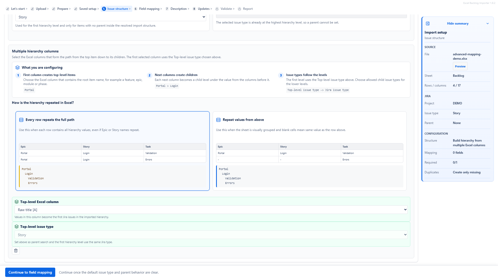

Import Jira hierarchy from Excel
Structured Jira imports are harder than flat issue creation. Excel to Jira Importer & Uploader helps teams prepare flat imports, parent-from-column imports and multi-column hierarchy imports where Jira configuration, issue type hierarchy, field screens and permissions support those relationships.
The hierarchy problem
Backlogs often arrive as grouped spreadsheet rows: epics, stories, tasks and implementation details in one workbook. Manual import can lose context when parent keys, issue types, hierarchy paths and relationships are not validated before Jira changes.

Current hierarchy modes
- No hierarchy: each Excel row becomes one separate Jira issue.
- Parent from an Excel column: one column identifies the parent row, and another column contains the matching row identity.
- Multiple hierarchy columns: the workbook stores levels such as Epic, Story and Task in separate columns.
- Existing Jira parent key: advanced flat imports can use a column with existing Jira parent keys when the project allows it.
Example spreadsheet columns
| Column | Purpose |
|---|---|
| Parent ID | Reference to another row in the same workbook when using parent-from-column mode. |
| Epic | Top-level hierarchy value when using multi-column hierarchy mode. |
| Story Summary | Summary for the story-level Jira issue. |
| Task Summary | Summary for a child-level Jira issue where supported. |
| Existing Parent Key | Existing Jira parent issue key where the target project supports parent relationships. |
| Issue Type | Jira issue type to create or update. |
| Description | Requirement or implementation detail. |
| Estimate | Time estimate or effort value supported by the target field. |
| Assignee | User reference where Jira lookup and permissions allow it. |
How mapping helps
Mapping lets you connect each spreadsheet column to the Jira field it should populate. For hierarchy imports, the important part is using stable level, issue type and parent columns so the import flow can validate relationships before issue creation.
Parent validation
Child rows need a valid parent relationship. Depending on the setup, that can come from a default parent, a mapped existing parent key, a parent row reference or a multi-column hierarchy path. Rows without the required parent reference should be blocked during validation before Jira changes are made.
Risks to validate
- Missing issue type or summary.
- Parent keys, parent references or hierarchy paths that do not match the expected setup.
- Repeated hierarchy paths that would otherwise create duplicate generated issues.
- Unsupported parent-child relationships in the Jira project.
- Invalid users, estimates, priorities, components or custom field values.
Plan a controlled hierarchy import
Review the main workflow, then continue to Atlassian Marketplace when you are ready to evaluate structured Excel imports for Jira Cloud.